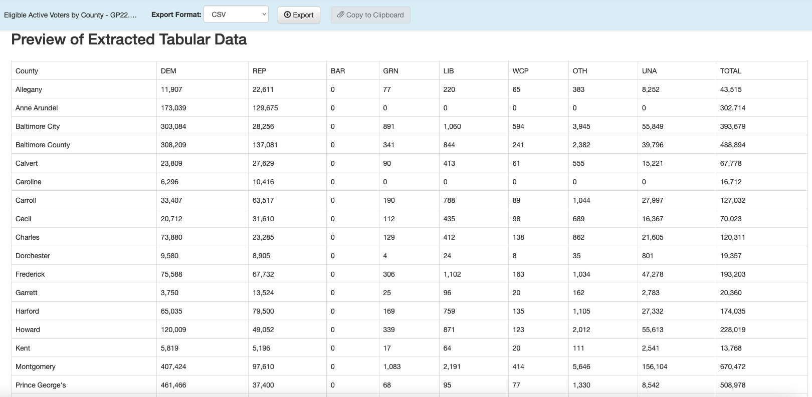
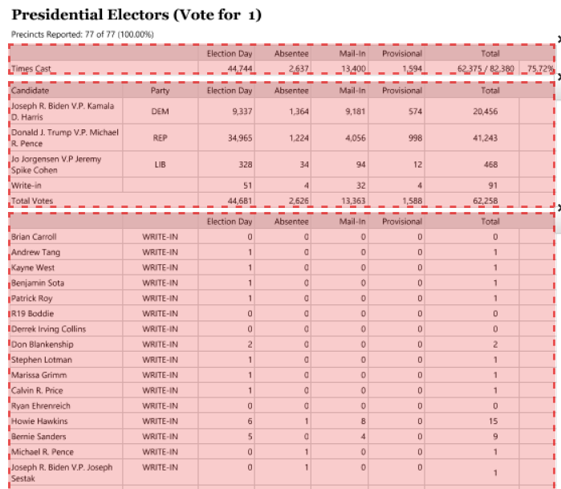
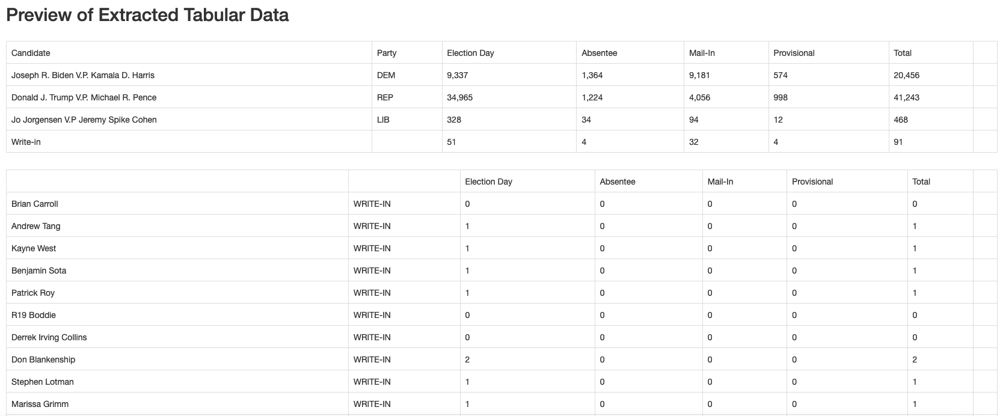

The next circle of Hell on the Dante’s Inferno of Data Journalism is the PDF. Governments everywhere love the PDF and publish all kinds of records in a PDF. The problem is a PDF isn’t a data format – it’s a middle finger, saying I’ve Got Your Accountability Right Here, Pal.
It’s so ridiculous that there’s a constellation of tools that do nothing more than try to harvest tables out of PDFs. There are online services like CometDocs where you can upload your PDF and point and click your way into an Excel file. There are mobile device apps that take a picture of a table and convert it into a spreadsheet. But one of the best is a tool called Tabula. It was build by journalists for journalists.
There is a version of Tabula that will run inside of R – a library called Tabulizer – but the truth is I’m having the hardest time installing it on my machine, which leads me to believe that trying to install it across a classroom of various machines would be disastrous. The standalone version works just fine, and it provides a useful way for you to see what’s actually going on.
Unfortunately, harvesting tables from PDFs with Tabula is an exercise in getting your hopes up, only to have them dashed. We’ll start with an example. First, let’s load the tidyverse and janitor.
Attaching package: 'janitor'
The following objects are masked from 'package:stats':
chisq.test, fisher.test
21.1 Easy does it
Tabula works best when tables in PDFs are clearly defined and have nicely-formatted information. Here’s a perfect example: active voters by county in Maryland.
Download and install Tabula. Tabula works much the same way as Open Refine does – it works in the browser by spinning up a small webserver in your computer.
When Tabula opens, you click browse to find the PDF on your computer somewhere, and then click import. After it imports, click autodetect tables. You’ll see red boxes appear around what Tabula believes are the tables. You’ll see it does a pretty good job at this.
Now you can hit the green “Preview & Export Extracted Data” button on the top right. You should see something very like this:

You can now export that extracted table to a CSV file using the “Export” button. And then we can read it into R:
voters_by_county <-read_csv("data/tabula-Eligible Active Voters by County - PG20.csv")
Rows: 25 Columns: 10
── Column specification ────────────────────────────────────────────────────────
Delimiter: ","
chr (1): County
ℹ Use `spec()` to retrieve the full column specification for this data.
ℹ Specify the column types or set `show_col_types = FALSE` to quiet this message.
Looks like a spreadsheet, right? Save that PDF file to your computer in a place where you’ll remember it (like a Downloads folder).
Now let’s repeat the steps we did to import the PDF into Tabula and autodetect the tables. It should look like this:

This is pretty good, but we don’t want the “Times Cast” boxes at the top of each contest, because they have a slightly different layout. Go through the pages (there are 9 of them) and click the “x” to the right of those to clear them.
Now you can hit the green “Preview & Export Extracted Data” button on the top right. Using the “Lattice” method, you should see something very like this:

You can now export that extracted table to a CSV file using the “Export” button. And then we can read it into R and clean up the column names:
fayette_2020 <-read_csv("data/tabula-Fayette PA 2020 General Summary.csv") %>%clean_names()
New names:
• `` -> `...8`
Warning: One or more parsing issues, see `problems()` for details
Rows: 284 Columns: 8
── Column specification ────────────────────────────────────────────────────────
Delimiter: ","
chr (7): Candidate, Party, Election Day, Absentee, Mail-In, Provisional, Total
lgl (1): ...8
ℹ Use `spec()` to retrieve the full column specification for this data.
ℹ Specify the column types or set `show_col_types = FALSE` to quiet this message.
fayette_2020
# A tibble: 284 × 8
candidate party election_day absentee mail_in provisional total x8
<chr> <chr> <chr> <chr> <chr> <chr> <chr> <lgl>
1 "Joseph R. Biden… DEM 9,337 1,364 9,181 574 20,4… NA
2 "Donald J. Trump… REP 34,965 1,224 4,056 998 41,2… NA
3 "Jo Jorgensen V.… LIB 328 34 94 12 468 NA
4 "Write-in" <NA> 51 4 32 4 91 NA
5 <NA> <NA> Election Day Absentee Mail-In Provisional Total NA
6 "Brian Carroll" WRIT… 0 0 0 0 0 NA
7 "Andrew Tang" WRIT… 1 0 0 0 1 NA
8 "Kayne West" WRIT… 1 0 0 0 1 NA
9 "Benjamin Sota" WRIT… 1 0 0 0 1 NA
10 "Patrick Roy" WRIT… 1 0 0 0 1 NA
# … with 274 more rows
21.3 Cleaning up the data in R
The good news is that we have data we don’t have to retype. The bad news is, it’s hardly in importable shape. We have a few things to fix. All the columns with the number of votes in them have commas, which causes R to think they are columns, not numbers. Let’s fix that by re-importing it and calling mutate so that those columns are numeric.
fayette_2020 <-read_csv("data/tabula-Fayette PA 2020 General Summary.csv") %>%clean_names()
New names:
• `` -> `...8`
Warning: One or more parsing issues, see `problems()` for details
Rows: 284 Columns: 8
── Column specification ────────────────────────────────────────────────────────
Delimiter: ","
chr (7): Candidate, Party, Election Day, Absentee, Mail-In, Provisional, Total
lgl (1): ...8
ℹ Use `spec()` to retrieve the full column specification for this data.
ℹ Specify the column types or set `show_col_types = FALSE` to quiet this message.
Warning: 20 parsing failures.
row col expected actual
5 -- a number Election Day
25 -- a number Election Day
73 -- a number Election Day
74 -- a number Election Day
80 -- a number Election Day
... ... ........ ............
See problems(...) for more details.
Warning: 20 parsing failures.
row col expected actual
5 -- a number Absentee
25 -- a number Absentee
73 -- a number Absentee
74 -- a number Absentee
80 -- a number Absentee
... ... ........ ........
See problems(...) for more details.
Warning: 20 parsing failures.
row col expected actual
5 -- a number Mail-In
25 -- a number Mail-In
73 -- a number Mail-In
74 -- a number Mail-In
80 -- a number Mail-In
... ... ........ .......
See problems(...) for more details.
Warning: 20 parsing failures.
row col expected actual
5 -- a number Provisional
25 -- a number Provisional
73 -- a number Provisional
74 -- a number Provisional
80 -- a number Provisional
... ... ........ ...........
See problems(...) for more details.
Warning: 20 parsing failures.
row col expected actual
5 -- a number Total
25 -- a number Total
73 -- a number Total
74 -- a number Total
80 -- a number Total
... ... ........ ......
See problems(...) for more details.
fayette_2020
# A tibble: 284 × 8
candidate party election_day absentee mail_in provisional total x8
<chr> <chr> <dbl> <dbl> <dbl> <dbl> <dbl> <lgl>
1 "Joseph R. Biden… DEM 9337 1364 9181 574 20456 NA
2 "Donald J. Trump… REP 34965 1224 4056 998 41243 NA
3 "Jo Jorgensen V.… LIB 328 34 94 12 468 NA
4 "Write-in" <NA> 51 4 32 4 91 NA
5 <NA> <NA> NA NA NA NA NA NA
6 "Brian Carroll" WRIT… 0 0 0 0 0 NA
7 "Andrew Tang" WRIT… 1 0 0 0 1 NA
8 "Kayne West" WRIT… 1 0 0 0 1 NA
9 "Benjamin Sota" WRIT… 1 0 0 0 1 NA
10 "Patrick Roy" WRIT… 1 0 0 0 1 NA
# … with 274 more rows
Ok, now we have numbers. Next we’ll get rid of the rows where candidate is NA or the value of candidate is literally “Candidate” and also drop the x8 blank column. To do the former, we’ll use the inverse of the is.na function by placing an exclamation point before it (you can read that filter as “where candidate is NOT NA”) and do the same to exclude “Candidate” from the matching values. For the latter, we’ll use select and the minus sign to drop that column
This still isn’t perfect - we don’t have the offices these folks are running for - but all things considered, that was pretty easy. Many - most? - electronic PDFs aren’t so easy to parse. Sometimes you’ll need to open the exported CSV file and clean things up before importing into R. Other times you’ll be able to do that cleaning in R itself.
Here’s the sad truth: THIS IS PRETTY GOOD. It sure beats typing it out. And since many government processes don’t change all that much, you can save the code to process subsequent versions of PDFs.